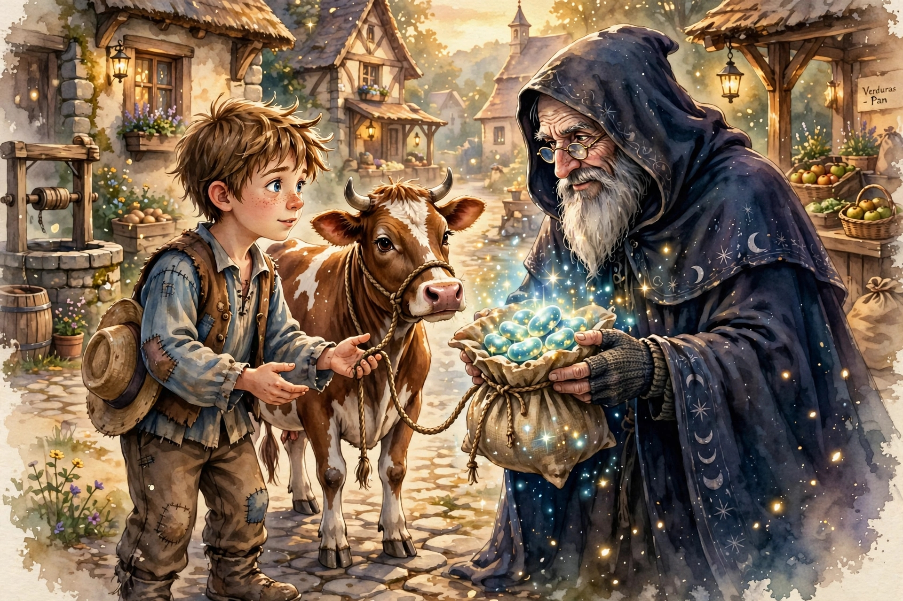
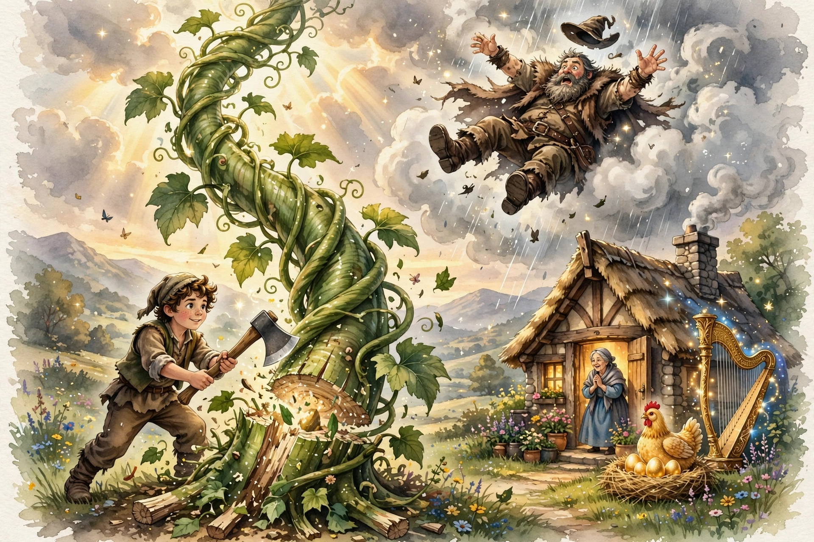

Érase una vez un niño llamado Jack que vivía con su mamá en una humilde granja. Ellos eran muy pobres y lo único que tenían era una vaca flaca. Un día la mamá de Jack lo llamó y le dijo: — Lleva la vaquita al pueblo y con el dinero que te paguen por ella compraremos comida. Asegúrate de recibir un buen precio. Jack partió de inmediato. En el camino, un anciano de aspecto bonachón y alegre lo saludó y le dijo: —Hola amiguito, ¿a dónde te diriges? Jack le contestó: —Voy al pueblo a vender mi vaquita para comprar comida. —No te preocupes amiguito, yo me quedo con la vaca y prometo cuidar muy bien de ella. A cambio, te daré estas tres habichuelas mágicas, ellas te traerán una enorme fortuna —dijo el viejito. Al llegar a casa, Jack saludó a su mamá con un abrazo y una enorme sonrisa. —Mira mamá, he dejado a la vaca con un señor muy bueno y a cambio él me dio estas habichuelas mágicas. —¿Cómo pudiste cambiar lo único que tenemos por unas pocas habichuelas? —dijo su mamá—. Muy enojada, arrojó las habichuelas por la ventana. Jack estaba muy triste y se fue a dormir sin cenar. Cuando Jack se despertó la mañana siguiente, descubrió a través de la ventana, un enorme tallo que había brotado de sus habichuelas mágicas. Movido por la curiosidad, Jack trepó el tallo hasta alcanzar un reino en el cielo. De la nada, apareció una pequeña hada azul y le dijo: —Ese castillo que ves a lo lejos perteneció a un caballero y a su familia. Ahora vive en él un gigante muy malvado. Jack, necesitas saber que tu madre es la esposa del caballero y tú eres su hijo. Sé valiente y recupera lo que te pertenece. Al decirlo, el hada desapareció. Jack continuó su camino hacia el castillo. Al encontrar las puertas entreabiertas ingresó sin anunciarse. Al instante, se topó con la esposa del gigante y le dijo: —¿Señora, puede por favor darme algo de comer y beber?, tengo mucha hambre. La noble mujer le dio un trozo de pan y un vaso de leche. Mientras comía, entró el gigante. El gigante tenía un aspecto horripilante. Jack estaba aterrorizado y de un salto se escondió en la alacena. El gigante exclamó: —¡Fi, fa, fo, fum! Huelo el aroma de un niño inglés. —¡Aquí no hay ningún niño! —dijo la esposa del gigante. Sin cuestionar a su esposa, el gigante se retiró a su habitación. Sacó debajo de la cama una bolsa con monedas de oro, las contó y las dejó a un lado. Luego, tomó una siesta. Jack salió sigilosamente de su escondite, guardó un puñado de monedas en sus bolsillos y huyó del castillo. En casa, le dio las monedas a su madre. Ambos vivieron felices y cómodamente por algún tiempo. Cuando se agotaron las monedas, Jack volvió a trepar el tallo hacia el castillo del gigante. Al igual que antes, se encontró con la esposa del gigante, ella le dió de comer y el gigante aparecío mientras comía. Una vez más, Jack terminó escondido en la alacena. Fue entonces que el gigante exclamó: —¡Fi, fa, fo, fum! Huelo el aroma de un niño inglés. —¡Aquí no hay ningún niño! —dijo la esposa del gigante. Un poco dudoso, el gigante se dirigió hacia su habitación para tomar la siesta, pero antes de marcharse, le pidió a su esposa que le llevara la gallina y el arpa. La esposa regresó con una gallina enjaulada y un arpa mágica que podía reproducir las más hermosas melodías. El arpa tocaba música alegre, pero Jack se sentía triste al ver la pobre gallina enjaulada. Mientras el gigante dormía, Jack tomó la gallina y el arpa. De repente, el arpa gritó: —¡Amo, un niño me está robando! El gigante se despertó y vio a Jack con sus dos preciados tesoros. Furioso, corrió detrás de él. Jack descendió el tallo con el arpa y la gallina a cuestas. Al tocar tierra llamó a su mamá: —Mamá, mamá trae el hacha. Su mamá trajo el hacha y Jack derrumbó el tallo. ¡CATAPLÚN! Cayó el gigante tan fuerte que fue a dar al otro lado del mundo. Al día siguiente, Jack y su mamá se despertaron asombrados al saber que la gallina ponía huevos de oro. ¡La gallinita estaba tan feliz que dejó miles de huevos de oro regados por toda la casa! La preciosa música del arpa los mantuvo alegres… y todos vivieron felices para siempre.

Versión escrita por Paola Artmann
Volver al inicio